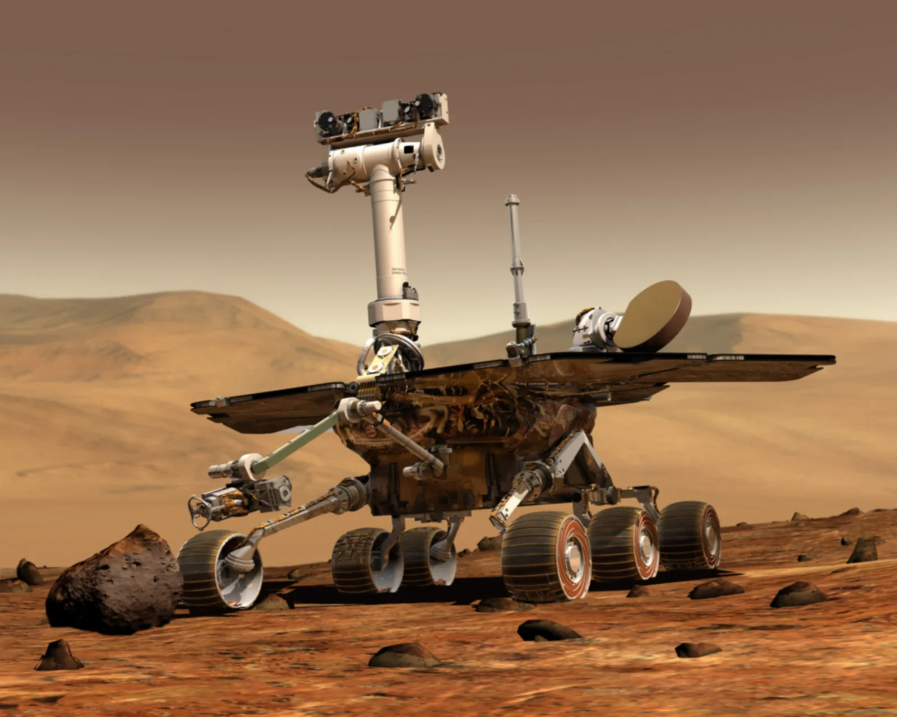
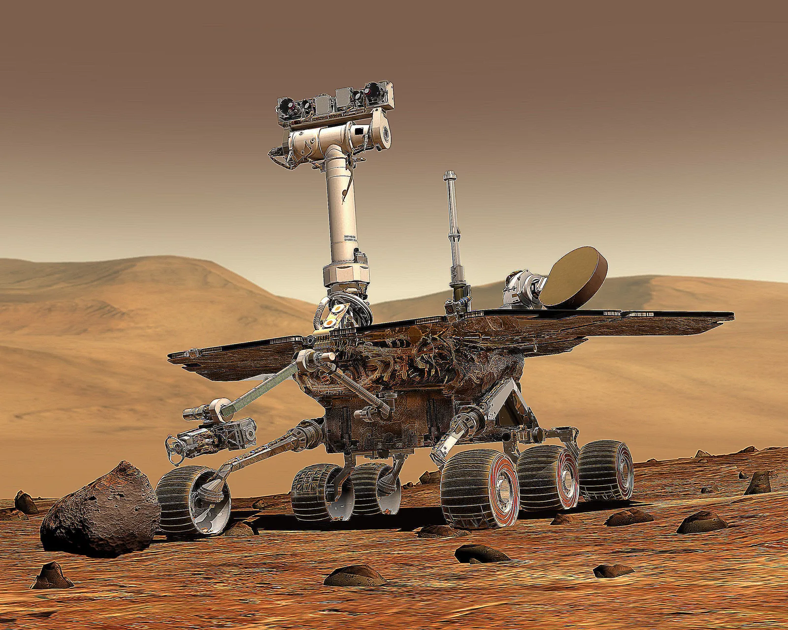
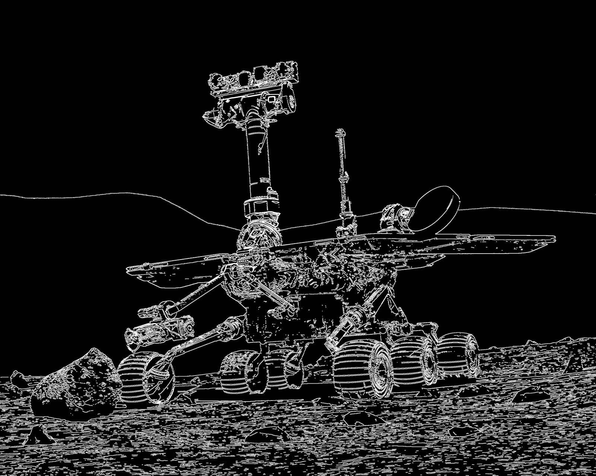
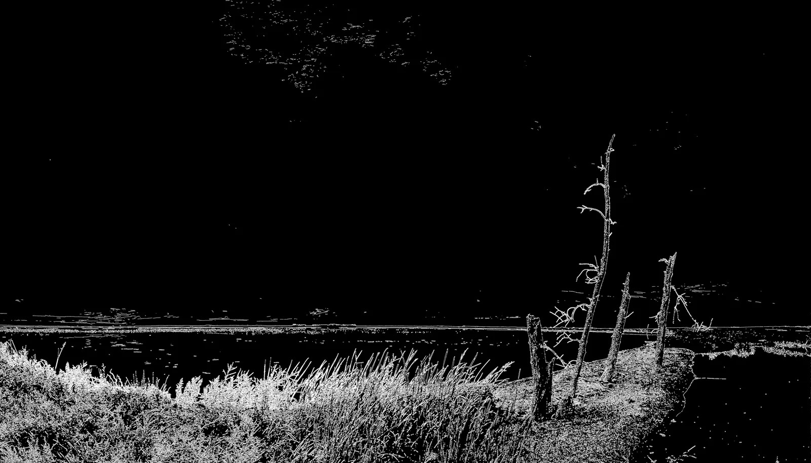

Original image
High-resolution input image used to evaluate the CUDA filtering pipeline.
CUDA · Parallel Computing · Image Processing · University Project
A GPU-accelerated image processing project developed with CUDA and OpenCV, including convolution filters, memory optimizations and a complete parallel Canny Edge Detector pipeline.
This project implements several image processing filters using CUDA. Each GPU thread processes one pixel while cooperating with neighbouring threads to reduce redundant memory access.
The implementation includes Gaussian blur, Laplacian filtering, Sobel gradients and a complete Canny Edge Detector. OpenCV is used for image loading, conversion and output generation.
The Gaussian blur reduces high-frequency noise by applying a weighted convolution kernel to every pixel.
Image tiles and their surrounding halo pixels are loaded into shared memory, allowing neighbouring threads to reuse the same data.
High-resolution input image used to evaluate the CUDA filtering pipeline.

Noise and high-frequency detail are reduced through parallel spatial convolution.
The Laplacian filter highlights rapid variations in pixel intensity, making contours and fine structural details more visible.

Edge response generated through a parallel Laplacian convolution kernel.
The filter emphasizes the silhouette, horizon and areas with strong intensity changes.
The Canny pipeline was implemented as a sequence of CUDA kernels. Each stage produces intermediate data that is used by the following operation.
The RGB image is converted into a single intensity channel.
High-frequency noise is removed before calculating gradients.
Horizontal and vertical derivatives are computed using Sobel convolution kernels.
Gradient intensity and orientation are calculated for each pixel.
Pixels that are not local maxima along the gradient direction are removed.
Weak edges are preserved only when connected to a strong edge.

Final edge map generated after suppression, double thresholding and hysteresis.

The detector identifies the horizon, terrain and high-contrast structures in the scene.
Filter coefficients were moved to CUDA constant memory because they are small and shared by all threads.
Image tiles were loaded into shared memory together with additional halo pixels. This reduces repeated global-memory reads during convolution.
| Memory configuration | Kernel duration | Registers per thread |
|---|---|---|
| Global memory | ≈ 2.36 ms | 36 |
| Global + constant memory | ≈ 2.25 ms | 39 |
| Constant + shared memory | ≈ 1.85 ms | 46 |
Different CUDA block dimensions were profiled to analyse the balance between parallelism, occupancy, register pressure and memory throughput.
| Block size | Duration | Compute throughput | Memory throughput |
|---|---|---|---|
| 8 × 8 | 6.97 ms | 70.19% | 55.46% |
| 16 × 16 | 6.50 ms | 67.27% | 57.19% |
| 32 × 32 | 7.15 ms | 58.76% | 51.55% |
The 16 × 16 configuration provided the best overall balance. Smaller blocks required more scheduling overhead, while 32 × 32 blocks increased register pressure and reduced occupancy.
High-resolution test image used for block-size and performance evaluation.
Gaussian convolution smooths small structures while preserving the main composition of the image.
The CUDA source file contains the convolution kernels, shared-memory loading logic, Gaussian and Sobel filters, non-maximum suppression, threshold computation and hysteresis stages.
View CUDA source code